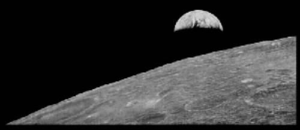

About Photography
Photography is the art, application and practice of creating durable images by recording light, either electronically by means of an image sensor, or chemically by means of a light-sensitive material such as photographic film. It is employed in many fields of science, manufacturing (e.g., photolithography), and business, as well as its more direct uses for art, film and video production, recreational purposes, hobby, and mass communication.
Typically, a lens is used to focus the light reflected or emitted from objects into a real image on the light-sensitive surface insaide a camera during a timed exposure. With an electronic image sensor, this produces an electrical charge at each pixel, which is electronically processed and stored in a digital image file for subsequent display or processing. The result with photographic emulsion is an invisible latent image, which is later chemically "developed" into a visible image, either negative or positive depending on the purpose of the photographic material and the method of processing. A negative image on film is traditionally used to photographically create a positive image on a paper base, known as a print, either by using an enlarger or by contact printing.
The Lunar Orbiter 1 landed on the moon to take the first image of earth from space on August 23, 1966.
The Evolution of Photography
It started with a box until about 190 years ago when Joseph Nicephore Niepce produced what is believed to be the oldest surviving photograph from a window of his estate in Le Gras in the Burgundy region of France. We’ll talk more about Joe in just a little bit. However, the beginnings of photography reach back further than that… much, much, much further back. We’re talking about an entirely different millennium.
Let’s stop here for just a moment in order to admit that as with many monumental discoveries and inventions there are protestations and controversies surrounding some of the events that will be recounted here. Still, I will always do everything I can to at least mention all involved parties in order to give credit where it is most certainly due.
It all most likely began in China with an alarmingly simple apparatus called the “camera obscura”. It’s name is derived from Latin which means “dark chamber” (how great is that?) and we can trace back references to this device as as the fourth century BCE. A camera obscura is a box of virtually any size which has a hole of small diameter in one side which allows light to pass. The light then casts itself on the inside of the box thus making an inverted image.
.jpg)
Eadweard Muybridge produced “The Horse in Motion”(1878), it was the first
photograph of motion.